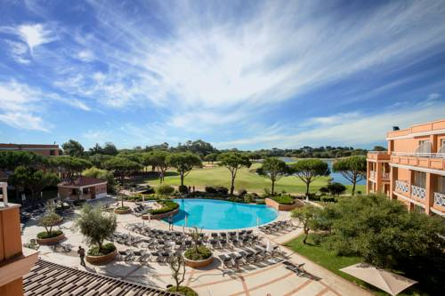

O Hotel Quinta da Marinha é um luxuoso resort situado no Parque Natural de Sintra-Cascais, com vistas para o Oceano Atlântico. Disponibiliza um campo de golfe de 18 buracos e 2 restaurantes.
Cada quarto do Hotel Quinta tem ar condicionado e uma espaçosa varanda com vistas panorâmicas para o campo de golfe ou para a Serra de Sintra. Também incluem um mini-bar, uma televisão de ecrã plano e uma casa de banho privativa com produtos de higiene pessoal L'Occitane.
O Restaurante Five Pines serve um buffet de refeições internacionais e o Rocca propõe cozinha gourmet portuguesa, confeccionada com legumes orgânicos cultivados no local. O Bar Trent Jones proporciona música ao vivo.
No spa, os hóspedes podem desfrutar de um relaxante tratamento de pedicura ou tratamento corporal. Também existe um centro de fitness e uma piscina interior. Um serviço de transporte de cortesia para Cascais é fornecido aos hóspedes do resort.
A Quinta da Marinha Resort está localizada na cidade costeira de Cascais e fica a 4 km da Praia do Guincho. Está a 35 minutos de carro de zonas históricas de Lisboa, tais como o Chiado, o Rossio e o Bairro Alto. A pitoresca e bela Sintra está a uma curta viagem de carro e é conhecida pelas suas paisagens deslumbrantes e monumentos. A propriedade fica a 36,8 km do Aeroporto Internacional de Lisboa.